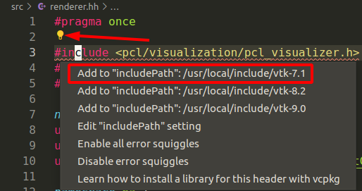

各语言通用部分
代码片的设置语法
// Place your snippets for markdown here. Each snippet is defined under a snippet name and has a prefix, body and
// description. The prefix is what is used to trigger the snippet and the body will be expanded and inserted. Possible variables are:
// $1, $2 for tab stops, $0 for the final cursor position, and ${1:label}, ${2:another} for placeholders. Placeholders with the
// same ids are connected.
// Example:
// "Print to console": {
// "prefix": "log",
// "body": [
// "console.log('$1');",
// "$2"
// ],
// "description": "Log output to console"
// }
"Inline function": {
"prefix": "if",
"body": [
"\\f$ $0 \\f$"
],
"description": "inline formula"
},
其实按照前面的注释非常容易看懂，$1和$2是tab跳转位置，代码片出来后，光标会自动跳转到$1位置，然后输入字符，按tab键跳到$2。 问题是，光标$1和$2的编辑模式很奇怪，仍然处于当前代码片编辑模式下，这种模式下无法嵌套地触发其他代码片。
$x参数是可以出现相同的，例如好几个$1同时出现，在编辑的时候，vscode会同时用同一个词填充多处代码，非常高效，规模较大的时候很震撼。 例如我们常常用到的头文件防重定义。
#ifdef __XX_HH__
#define __XX_HH__
#endif // __XX_HH__
{.cpp}
然而我们通常要在光标处触发其他代码片，这就需要使用到$0，它表示，光标最终的位置，即如果没有$x，代码片自动输出时就退出了代码片模式，自然就可以触发其他的代码片。
markdown代码片
- “File”->“Preference”->“User snippets”，然后在下拉列表中选择“markdown.json”
- 按照模板来编辑，简单的例子如下：
- markdown格式是默认没有打开intellsense功能的，需要手动打开，在“ctrl+p”->“输入>”->“输入language”->“选择markdown”->“edit in settings.json” 按照如下方式添加：
{
"cmake.configureOnOpen": true,
"C_Cpp.updateChannel": "Insiders",
"http.proxySupport": "off",
"[markdown]": {
"editor.quickSuggestions":true
}
}
Latex常用的代码片
参见 vscode中的markdown相关的代码片
vscode如何对变量进行一改全改？
按F2，输入新的名称，然后在下方点击打钩图标即可。
vscode中如何设置前后跳转？
问题：在代码浏览过程中，个人比较习惯使用QtCreator的方式进行跳转，即Alt+右为向前跳转，Alt+左为向后跳转。 vscode默认跳转方式为ctrl+alt+‘-’，这种组合对于非常常用的功能来说太复杂了。
解决方法：
step 1: File -> Preference -> Keyboard Shortcuts step 2: 搜索“Forward”找到向前跳转的设置， 搜索“Backward“找到向后跳转的设置，按照提示设置即可。
如何设置ruler?
问题：编写代码的时候，ruler也就是右侧的竖线，ruler可以提醒我们一行代码是否太长，需要拆行。
解决方法：
Step 1: File -> Preference -> Settings，搜索“ruler”，选择“Edit in settings.json”
Step 2: 按照一下方法进行设置
{
"cmake.configureOnOpen": true,
"C_Cpp.updateChannel": "Insiders",
"http.proxySupport": "off",
"[markdown]": {
"editor.quickSuggestions":true
},
"editor.rulers": [80,120] // 设置2个ruler，分别在80列和120列
}
C\C++篇
c_cpp_properties.json
c_cpp_properties.json文件是vscode关于C++配置的核心文件，默认情况下是不会生成的，可以使用下面两种方法生成：
(1) ctrl+shift+p，选择"C/C++ Edit configurations..."。 (2) 在'.vscode'目录下直接手动建立'c_cpp_properties'文件，然后‘ctrl+p'搜索对应文件并且编辑。
这两种方式生成的c_cpp_properties文件放在.vscode目录下。
如何添加宏定义？
在'c_cpp_properties.json'文件中的"configurations"项目下的"defines"插入宏定义即可。
c_cpp_properties.json文件请参考 c_cpp_properties.json 。
举例：
{
"configurations": [
{
"name": "Win32",
"defines": ["_DEBUG", "UNICODE", "_UNICODE"],
"compilerPath": "C:/Program Files (x86)/Microsoft Visual Studio/2017/BuildTools/VC/Tools/MSVC/14.16.27023/bin/Hostx64/x64/cl.exe",
"windowsSdkVersion": "10.0.17763.0",
"intelliSenseMode": "msvc-x64",
"cStandard": "c11",
"cppStandard": "c++17"
}
],
"version": 4
}
在vscode中单步调试
Step 1: 在CMakeLists.txt中添加以下debug设置
set(DEFAULT_BUILD_TYPE "Debug")
set(CMAKE_CXX_FLAGS_DEBUG "{CMAKE_CXX_FLAGS} -o0 -ggbd")
add_compile_options(-g)
Step 2: 在.vscode目录中按照如下设置
{
"version": "0.2.0",
"configurations": [
{
"name": "(gdb) Launch",
"type": "cppdbg",
"request": "launch",
"program": "${workspaceFolder}/build/msft",
"args": [],
"stopAtEntry": false,
"cwd": "${workspaceFolder}",
"environment": [
{"name":"LD_LIBRARY_PATH", "value":"/usr/local/lib"}
],
"externalConsole": false,
"MIMode": "gdb",
"setupCommands": [
{
"description": "Enable pretty-printing for gdb",
"text": "-enable-pretty-printing",
"ignoreFailures": true
}
]
},
{
"name": "test_intersection",
"type": "cppdbg",
"request": "launch",
"program": "${workspaceFolder}/3rd-party/ha_math/unit_test/build/test_intersection",
"args": [],
"stopAtEntry": false,
"cwd": "${workspaceFolder}",
"environment": [],
"externalConsole": false,
"MIMode": "gdb",
"setupCommands": [
{
"description": "Enable pretty-printing for gdb",
"text": "-enable-pretty-printing",
"ignoreFailures": true
}
]
},
]
}
其中，program设置为目标可执行文件。
Step 3: 按F5进行调试，F10单步（跳过函数），F11单步（跳入函数）。
vscode单步调试会先自动跳到末尾
如题，vscode单步调试的时候，不知为何会自动先跳到末尾，这时候不要惆怅，只需要再按一次F5，程序就会自动运行下去，并且可以正常的调试。
很奇怪，原因还未知道。
如何使用clang-format进行代码格式化？
步骤1：File->Preference->Settings->搜索“format”，选择“Editor:Format On Save”。
步骤2：同样在Settings界面，搜索“C_Cpp”，在“C_Cpp:Clang_format_style”下方的编辑框中填入“file”，即使用工作空间的“.clang-format”文件作为style，工作空间就是vscode打开的目录，例如打开目录的时候使用“code .”，那么工作空间就是“.”，记住不是.vscode目录！
vscode如何给当前project添加包含路径？
在c_cpp_properties.json中按照如下方法添加。
c_cpp_properties.json相关信息可以在 c_cpp_properties.json 找到。
{
"configurations": [
{
"includePath": [
"${workspaceFolder}/3rd-party/rapidjson/include",
"${workspaceFolder}/3rd-party/iguana"
],
"intelliSenseMode": "gcc-x64",
"compilerPath": "/usr/bin/gcc",
"cStandard": "gnu11",
"cppStandard": "gnu++14"
}
],
"version": 4
}
vscode如何在系统级别添加包含路径？
问题：一些库安装后的头文件路径不是最标准的/usr/include，例如Eigen的安装头文件路径为/usr/local/include/eigen3，然而vscode默认不会搜索这个路径，导致vscode无法正确解析这些头文件。
解决方法：在vscode中手动添加包含目录。
step 1: 菜单 File -> Preference -> settings -> Extensions -> C/C++ -> Include Path，选择“Edit in settings.json”。
step 2: 按照如下方式添加include path。
{
"cmake.configureOnOpen": true,
"C_Cpp.updateChannel": "Insiders",
"http.proxySupport": "off",
"[markdown]": {
"editor.quickSuggestions":true
},
"C_Cpp.default.includePath": ["/usr/local/include/eigen3"] // 添加include path
}
注意：由于这个设置是针对于vscode的，对于任何工程，这个路径都会自动添加。
Python篇
python调试设置
{
// Use IntelliSense to learn about possible attributes.
// Hover to view descriptions of existing attributes.
// For more information, visit: https://go.microsoft.com/fwlink/?linkid=830387
"version": "0.2.0",
"configurations": [
{
"name": "Evaluate",
"type": "python",
"request": "launch",
"program": "${file}",
"args":["01"],
"cwd": "${fileDirname}",
"console": "integratedTerminal"
"env":{
"PYTHONPATH":{
"${workspaceRoot}:/path/to/module_a:/path/to/module_b"
}
}
}
]
}
注意，通过配置env中的PYTHONPATH可以使用的PYTHONPATH路径下的代码。
指定python版本：键入“ctrl+p” -> 输入“> Python: select intepreter”，然后选择期望的版本，3.6或者2.7。
如何生成c_cpp_properties.json文件？
ctrl+shift+P，输入“C/C++:Edit configurations”，一般来说输入前面几个字符vscode就会自动弹出目标了。
#include errors detected. Please update your includePath.
IntelliSense features for this translation unit (/path/to/project/file.cpp) will be provided by the Tag Parser.
当存在多个版本的代码时，vscode无法抉择，需要用户指定特定的版本，点击灯泡图标并且选择合适版本即可。

c++ 17 语法支持
namespace "std" has no member "string_view"
 1.8.13
1.8.13